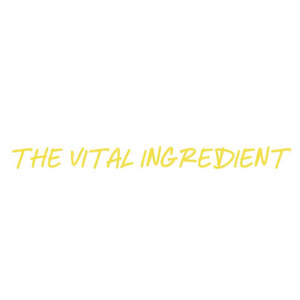

Trade Mark Journal No.2026/011 13 March 2026
UK00004344145 23 February 2026 (30,43)

- Class 30
- Dough; Pastry dough; Dough flour; Phyllo dough; Cookie dough; Empanada dough; Biscotti dough; Pizza dough; Filo dough; Cake dough; Dough for cakes; Brownie dough; Ferments for dough; Sour dough; Dough mix; Pizza dough mix; Frozen dough; Frozen cookie dough; Wafer dough; Frozen biscotti dough; Fried dough cookies; Frozen brownie dough; Bread doughs; Filo doughs; Cake doughs; Ready-to-bake dough products; Fried dough twists; Fried dough cookies (karintoh); Deep-fried dough sticks (Youtiao); Alimentary paste [dough]; Foodstuffs made from dough; Filled yeast dough with fillings consisting of meat; Wafer doughs; Filled yeast dough with fillings consisting of vegetables; Pizza flour; Filled yeast dough with fillings consisting of fruits; Pastry; Pre-baked bread; Filo pastry; Pre-baked pizzas crusts; Bread rolls; Rolls (Bread -); Rolls [bread]; Pizza crust; Pizza crusts; Flour-based gnocchi; Bread buns; Bread and buns; Soft rolls [bread]; Pastry mixes; Skin [pastry] for spring rolls; Shortcrust pastry; Spring roll skin [pastry]; Puff pastry; Pastry shells; Cornflour bun bread (almojábana); Pie crusts; Danish bread rolls; Frozen pastry sheets; Frozen pastry; Pita bread; Frozen pizza crusts; Flour-based dumplings; Egg roll cookies; Bread biscuits; Macaroons [pastry]; Prepared pie crust mixes; Rice crusts; Naan bread; Malted bread mix; Doughs, batters, and mixes therefor; Bread; Unleavened bread in thin sheets; Wholemeal bread mixes; Frozen pizza crusts made of cauliflower; Filled bread rolls; Bread pudding; Graham cracker pie crusts; Unleavened bread; Corn bread mix; Wholemeal bread; Butter biscuits; Rye bread; Bread sticks; Bread mixes; Rolled fondant; Soda bread.
- Class 43
- Catering; Catering services; Hotel catering services; Mobile catering; Business catering services; Catering services for hospitality suites; Catering services for company cafeterias; Catering services for providing European-style cuisine; Outside catering; Mobile catering services; Outside catering services; Catering services for providing Japanese cuisine; Catering services for schools; Catering services for providing Spanish cuisine; Catering services for educational establishments; Catering services for hospitals; Rental of catering equipment; Catering services for the provision of food; Catering services specialising in cutting ham for weddings and private events; Providing food and drink catering services for convention facilities; Providing food and drink catering services for exhibition facilities; Catering of food and drinks; Food and drink catering for banquets; Catering for the provision of food and beverages; Catering services specialised in cutting ham by hand, for weddings and private events; Catering in fast-food cafeterias; Catering services for conference centers; Food and drink catering; Catering of food and drink; Catering (Food and drink -); Providing food and drink catering services for fair and exhibition facilities; Consultancy services in the field of food and drink catering; Charitable services, namely providing food and drink catering; Organisation of catering for birthday parties; Catering services for the provision of food and drink; Food and drink catering for institutions; Office catering services for the provision of coffee; Catering for the provision of food and drink; Catering services specialising in cutting ham for fairs, tastings and public events; Catering services for retirement homes; Catering services specialised in cutting ham by hand, for fairs, tastings and public events; Catering services for nursing homes; Food and drink catering for cocktail parties; Providing restaurant services; Banqueting services; Restaurant services; Hospitality services [accommodation]; Take-away restaurant services; Carvery restaurant services; Restaurant services incorporating licensed bar facilities; Take-out restaurant services; Providing banquet and social function facilities for special occasions; Holiday planning services [accommodation]; Hotel restaurant services; Services for reserving holiday accommodation; Self-service restaurant services; Providing temporary accommodation as part of hospitality packages; Restaurant reservation services; Washoku restaurant services; Services for providing food; Accommodation services; Bartending services; Fast-food restaurant services; Holiday accommodation services; Mobile restaurant services; Booking services for holiday accommodation; Ramen restaurant services; Bistro services; Sushi restaurant services; Take-away food services; Bar and restaurant services; Restaurant and bar services; Providing guesthouse services; Reservation and booking services for restaurants and meals; Hotel accommodation services; Tempura restaurant services; Booking services for accommodation; Providing hotel accommodation; Providing accommodation for functions; Restaurant services provided by hotels; Consultancy services relating to hotel facilities; Takeaway food services; Accommodation services for meetings; Personal chef services; Accommodation services for functions; Providing food and drink for guests in restaurants; Restaurant services for the provision of fast food; Providing accommodation for meetings; Corporate hospitality (provision of food and drink); Serving food and drink for guests in restaurants; Food preparation services; Tourist camp services [accommodation]; Arranging of wedding receptions [food and drink]; Brasserie services; Charitable services, namely providing temporary accommodation; Reservation services for accommodation; Accommodation reservation services; Booking agency services for holiday accommodation; Hospitality services [food and drink]; Travel agency services for reserving hotel accommodation; Snack-bar services; Tourist agency services for booking accommodation; Tour operator services for the booking of temporary accommodation; Arranging of wedding receptions [venues]; Hotel accommodation reservation services; Services for providing food and drink; Providing temporary lodging for guests; Consultancy services relating to food preparation; Booking agency services for hotel accommodation; Agency services for booking hotel accommodation.
Virtue Creations Ltd